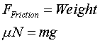
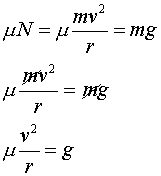
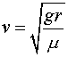

The no-skid condition is:

Using what we know about the Normal Force as Weight we can combine our equations in the following way:

So, in order to stay on the road the car must travel with a speed given by:

Practice